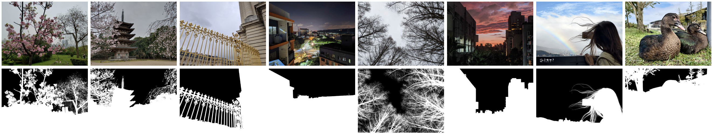

An Improved Sky Image Matting Method with a High-Resolution Dataset
Cheng-Yen Tsai, Zheng-Hui Huang, Wei-Lien Tang, Hsiu-Ting Yang, Jo-Fan Wu, Yung-Yu Chuang
National Taiwan University, ASUSTek Computer Inc.

Abstract
This paper proposes an improved method for sky image matting. We present a high-resolution sky image matting dataset and generate accurate alpha mattes
by leveraging a trimap-based image matting network with manually annotated trimaps. Next, we modify a general image matting network for sky matting.
Specifically, we integrate CoordConv layers and a trainable guided filter into the network and conduct a preliminary study to find the optimal design.
Experimental results demonstrate that our dataset provides a better training environment for various image matting networks compared to an existing sky
image matting dataset in both quantitative metrics and visual quality. Additionally, our modified network shows superior performance compared to
existing methods.
Dataset Overview
Our dataset contains 744 real-world images captured from mobile devices, with 2K resolution for each image. The testing set is created by randomly
selecting 18 images from the dataset, while the training set consists of the remaining 726 images.
Downloads